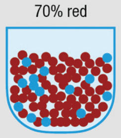
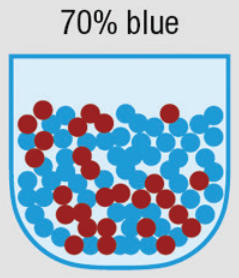

Probability Estimation Task
Two bags are available: one contains 70% red chips, the other contains 70% blue chips. We will flip a coin to randomly select one target bag. You will draw chips from this bag with replacement, then estimate the chance that the selected bag is the 70% red one.

Bag A: 70% Red Chips

Bag B: 70% Blue Chips
The experiment runs for 12 drawing rounds. No statistics knowledge required.